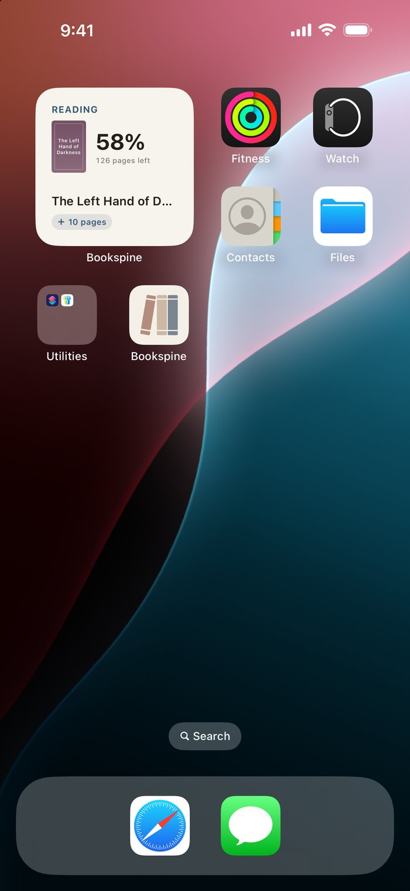

How to put the book you're reading on your iPhone Home Screen
A reading widget keeps the book you're in the middle of where you look many times a day — the cover, how far you are, and how many pages are left.
Here is how to set one up with Bookspine. The Small widget is free.
1. Add the book you're reading
Open Bookspine and tap +.
Search by title or author, or scan the barcode on the back cover. The title, author and cover are filled in for you.
The book goes into “Reading now”.
No barcode or no match? Add it by hand — only the title is required.
2. Put the widget on your Home Screen
Touch and hold an empty area of your Home Screen until the apps jiggle.
Tap Edit (or +) in the top corner, then search for “Bookspine”.
Choose the Small size and tap Add Widget.

3. Add pages right on the widget
Tap “+10 pages” on the widget as you read. The app doesn't need to open. When you reach the last page, the book is marked as finished and moves to your shelf.
Want more on the Home Screen?
With Bookspine Pro (a one-time purchase, not a subscription):
Medium: the cover, a progress bar, pages left and books read this year
Large: this year's shelf — every book you've finished, lined up
Lock Screen: your progress without unlocking
Questions
Is the reading widget free?Yes. The Small widget — the book you're reading, its cover or spine, and how far you are — is free, with no ads and no account. Medium, Large and Lock Screen widgets are part of Bookspine Pro, a one-time purchase.
I'm reading two books. Which one shows?The Small widget shows the book you started most recently.
What if the book has no page count?You can still add it — only the title is required. Progress is then kept as a percentage, and each tap on the widget adds 5%.
What happens when I reach the last page?The book is marked as finished and moves to your shelf, where finished books line up in the order you read them.